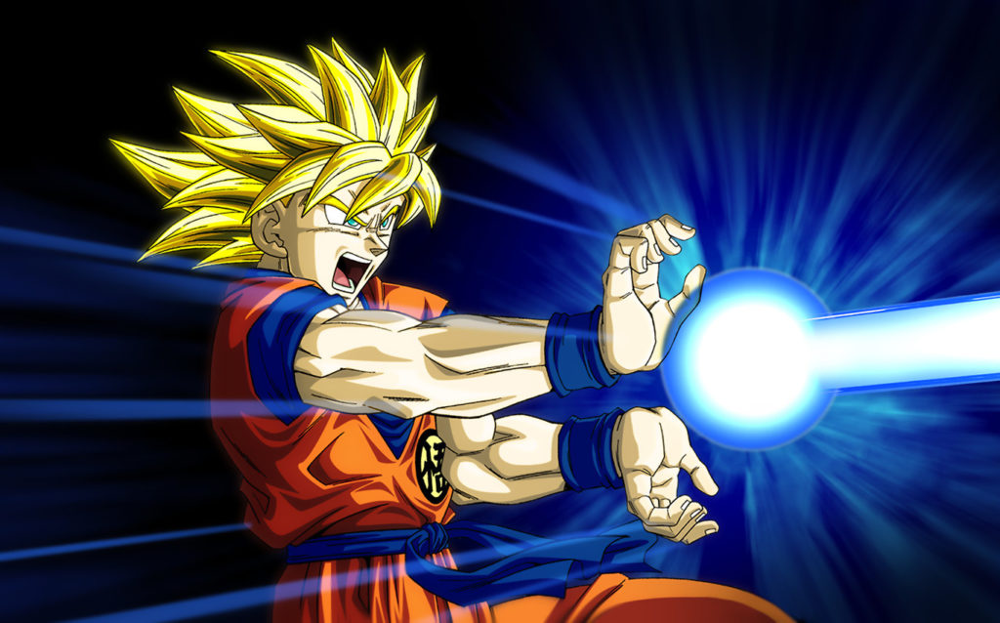

"Nunca te conformes con cómo eres ahora, supera tus límites."
- Goku
Dragon Ball es una de las series de anime más populares y queridas en todo el mundo.
Creada por Akira Toriyama, esta historia épica sigue las aventuras de Goku, un poderoso guerrero Saiyajin, en su búsqueda por proteger la Tierra de amenazas intergalácticas.
A lo largo de los años, Goku se ha convertido en un icono de la cultura pop y ha capturado los corazones de millones de fans en todo el mundo.
Exploraremos la historia de Goku desde su infancia hasta convertirse en el héroe legendario que conocemos hoy en día.
Descubriremos las habilidades y transformaciones que ha adquirido a lo largo de su viaje, como el Super Saiyajin, seres queridos y a la humanidad. Prepárate para sumergirte en el fascinante mundo de Goku y descubrir por qué se ha convertido en uno de los personajes más icónicos de todos los tiempos.


No pienso que esté salvando el mundo. Lo que ocurre es que acudo a cada conflicto por la batalla,
lo que ronda por mi mente es derrotar al más fuerte para poder convertirme en el más fuerte.
— Son Goku al Androide
Su característica más notable es la capacidad de superar sus límites una y otra vez.
Desarrolló transformaciones que lo hicieron leyenda: desde el Super Saiyajin hasta el Ultra Instinto,
cada forma representa una nueva cumbre de poder. Entre sus técnicas más famosas están el Kamehameha, la Genki Dama y la Teletransportación.
Aunque es ingenuo y a veces descuidado, Goku siempre lucha para proteger a sus seres queridos y al universo entero.
Está casado con Chi-Chi (Milk) y es padre de Gohan y Goten, aunque muchas veces prioriza el entrenamiento y los combates sobre la vida familiar.
Más allá de su fuerza, Goku es un símbolo de superación y perseverancia. Siempre busca rivales más fuertes no por maldad, sino por el deseo de mejorar y poner a prueba sus límites.
Su figura trascendió el anime y se convirtió en un ícono cultural mundial, representando la amistad, la lucha constante y el nunca rendirse.


| Poderes de Goku | ||
|---|---|---|
| Nombre | Descripción | Foto |
| Kamehameha | Onda de energía icónica, concentrada y liberada con las manos. |  |
| Genki Dama | Esfera creada con la energía vital de seres vivos. | |
| Rayo Ocular | Disparo de energia desde los ojos | |
| Teletransportación | Movimiento instantáneo hacia cualquier lugar donde detecte un ki. | |
| Kiai | Empuje invisible de energía que repele al oponente. | |
| Puño de dragón | Golpe final con forma de dragón dorado que atraviesa al enemigo. | |
| Puño de dragón | Golpe final con forma de dragón dorado que atraviesa al enemigo. | |
Goku conoció a Chi-Chi (Milk) de niño y, sin entender del todo qué significaba, le prometió casarse con ella. Años más tarde, en el Torneo de las Artes Marciales, le recordó esa promesa y finalmente se casaron.
Aunque Goku es ingenuo en temas de amor y pasa gran parte del tiempo entrenando o peleando, quiere profundamente a su esposa y siempre regresa para estar con ella y proteger a su familia.
Chi-Chi, por su parte, representa el pilar del hogar, la disciplina y el cuidado de sus hijos, equilibrando la vida de un guerrero que vive entre batallas y entrenamientos.
Chi-Chi mantiene el hogar, impulsa los estudios y la estabilidad; Goku aporta la protección y el pan “a golpes cósmicos”.
Se aman a su manera: él simple y honesto, ella firme y cariñosa (con regaño incluido).
Chi-Chi es el ancla emocional y logística de la familia Son: fija reglas, cuida, alimenta, y—cuando toca—se pone los guantes. Sin ella, Goku salva universos… pero no tendría hogar al cual volver.
El primogénito de Goku y Chi-Chi. Inteligente y estudioso, orientado más hacia la vida académica por su madre, aunque heredó el potencial de combate de su padre. En su juventud fue clave en la derrota de Cell, demostrando un poder oculto increíble. Representa el balance entre la fuerza guerrera de los Saiyajin y el corazón bondadoso de los terrícolas.
El hijo menor. Alegre, espontáneo y con una personalidad mucho más libre que la de Gohan. Desde muy pequeño demostró un talento natural para pelear, llegando a transformarse en Super Saiyajin a muy corta edad. Su relación cercana con Trunks lo convirtió en parte de un dúo dinámico lleno de energía y travesuras.

Su mejor amigo desde la infancia, casi como un hermano
Amiga de toda la vida, soporte tecnológico y emocional.
Rival eterno, hoy en día un aliado inseparable.

Su primer mentor en artes marciales.
Maestro divino que lo guía en los niveles más altos de poder.

Príncipe de los Saiyajin. Fue vencido en su primer combate tras quedar gravemente herido; escapó y más tarde se convirtió en aliado.
Tirano galáctico y destructor del planeta Vegeta. Fue derrotado en Namek cuando Goku se transformó en Super Saiyajin por primera vez.
Bioandroide que alcanzó la perfección. Aunque Goku lo enfrentó, fue Gohan quien finalmente lo venció con un Kamehameha final.
Ser mágico con múltiples formas. Goku lo destruyó en su versión final, Kid Buu, con una Genki Dama creada con la energía de toda la humanidad.
Dios de la Destrucción. Goku alcanzó el estado de Super Saiyajin Dios para luchar contra él, pero no lo derrotó; Beerus decidió perdonarlo.

Asesino del Universo 6 con la habilidad de saltar en el tiempo. Su combate con Goku terminó en empate.

Kaio-shin aprendiz que robó el cuerpo de Goku en otra línea temporal. Fue eliminado finalmente gracias a Zeno-sama, el rey de todo.

Guerrero del Universo 11 con fuerza descomunal. Fue sacado de la arena en el Torneo del Poder gracias a la unión de Goku, Freezer y Androide 17.
Devorador de planetas del manga de Dragon Ball Super. Fue derrotado por Goku usando el Ultra Instinto completo.
Correo: julian.rivera@utp.edu.co
Direccion: Calle 17 #27-60
Universidad Tecnologica de Pereira